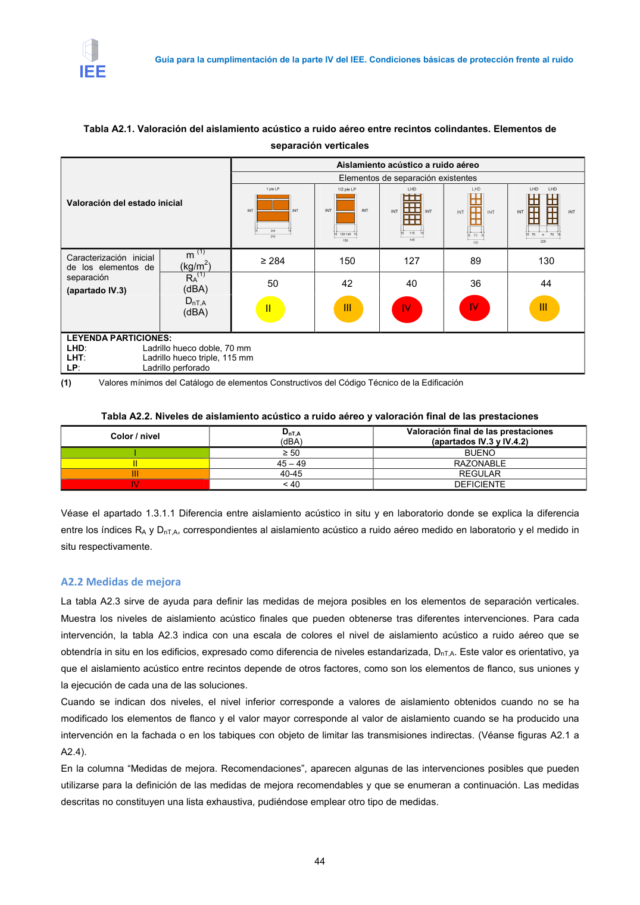

GUIA · Página 54 · versión 2016-11-01
SHA256: 813669d3066c0ff79457d57b80b0512a4fbb248bc5db1f7baf473c369a064738 · página física 54 de 65 · métodos de encabezado
solo si están cotejados.
Formatos: Markdown · JSON de bloques · PDF p. 54 · imagen PNG
Página gráfica: el texto extraído puede ser parcial. Prevalece la imagen/PDF; depende de ellos.
Guía para la cumplimentación de la parte IV del IEE. Condiciones básicas de protección frente al ruido 44 Tabla A2.1. Valoración del aislamiento acústico a ruido aéreo entre recintos colindantes. Elementos de separación verticales Valoración del estado inicial Aislamiento acústico a ruido aéreo Elementos de separación existentes Caracterización inicial de los elementos de separación (apartado IV.3) m (1) (kg/m2) ≥ 284 150 127 89 130 RA (1) (dBA) 50 42 40 36 44 DnT,A (dBA) LEYENDA PARTICIONES: LHD: Ladrillo hueco doble, 70 mm LHT: Ladrillo hueco triple, 115 mm LP: Ladrillo perforado (1) Valores mínimos del Catálogo de elementos Constructivos del Código Técnico de la Edificación Tabla A2.2. Niveles de aislamiento acústico a ruido aéreo y valoración final de las prestaciones Color / nivel DnT,A (dBA) Valoración final de las prestaciones (apartados IV.3 y IV.4.2) I ≥ 50 BUENO II 45 – 49 RAZONABLE III 40-45 REGULAR IV < 40 DEFICIENTE Véase el apartado 1.3.1.1 Diferencia entre aislamiento acústico in situ y en laboratorio donde se explica la diferencia entre los índices RA y DnT,A, correspondientes al aislamiento acústico a ruido aéreo medido en laboratorio y el medido in situ respectivamente. A2.2 Medidas de mejora La tabla A2.3 sirve de ayuda para definir las medidas de mejora posibles en los elementos de separación verticales. Muestra los niveles de aislamiento acústico finales que pueden obtenerse tras diferentes intervenciones. Para cada intervención, la tabla A2.3 indica con una escala de colores el nivel de aislamiento acústico a ruido aéreo que se obtendría in situ en los edificios, expresado como diferencia de niveles estandarizada, DnT,A. Este valor es orientativo, ya que el aislamiento acústico entre recintos depende de otros factores, como son los elementos de flanco, sus uniones y la ejecución de cada una de las soluciones. Cuando se indican dos niveles, el nivel inferior corresponde a valores de aislamiento obtenidos cuando no se ha modificado los elementos de flanco y el valor mayor corresponde al valor de aislamiento cuando se ha producido una intervención en la fachada o en los tabiques con objeto de limitar las transmisiones indirectas. (Véanse figuras A2.1 a A2.4). En la columna “Medidas de mejora. Recomendaciones”, aparecen algunas de las intervenciones posibles que pueden utilizarse para la definición de las medidas de mejora recomendables y que se enumeran a continuación. Las medidas descritas no constituyen una lista exhaustiva, pudiéndose emplear otro tipo de medidas. II III IV IV III
